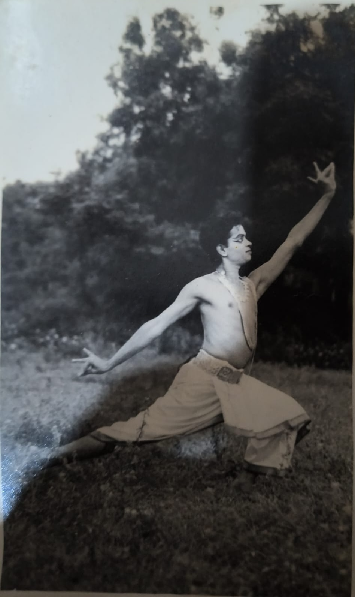
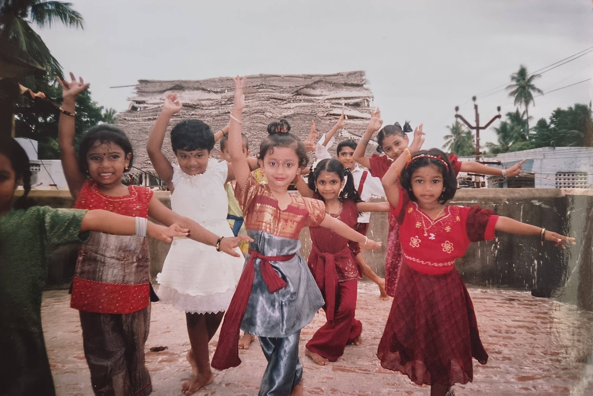
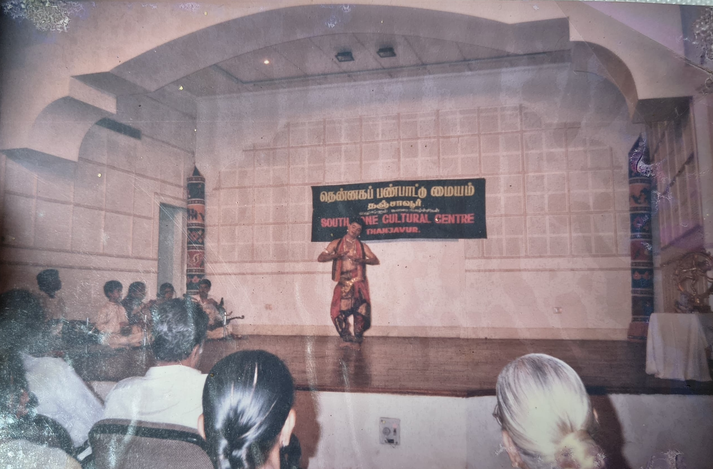
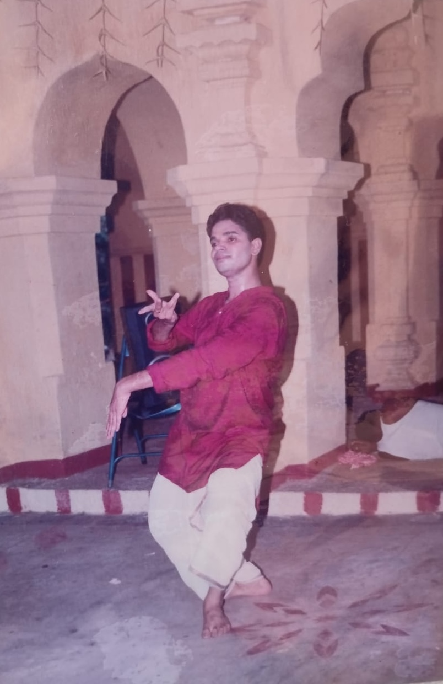
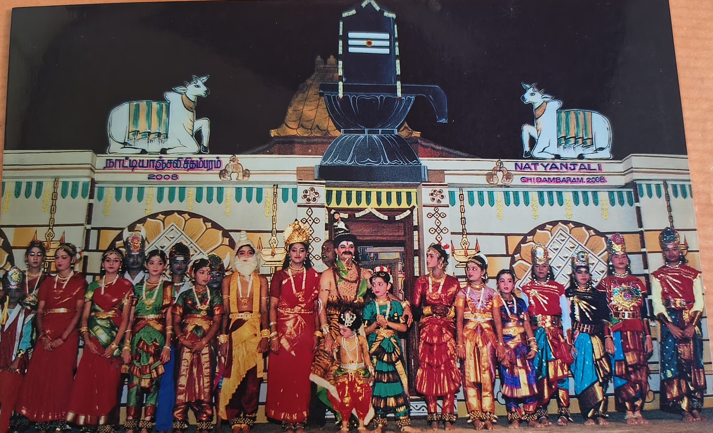
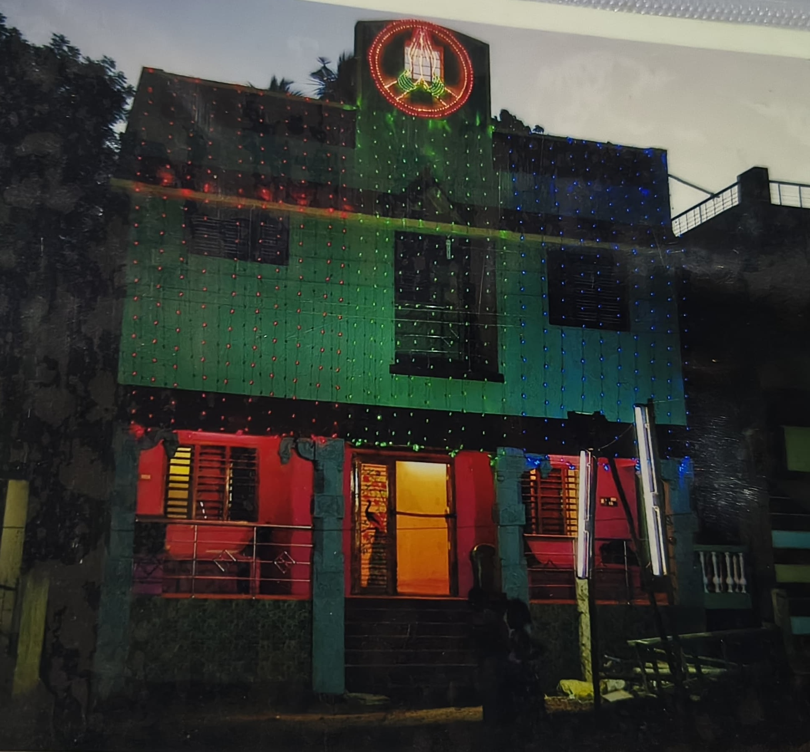
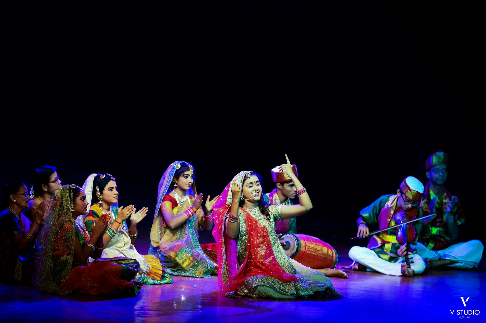
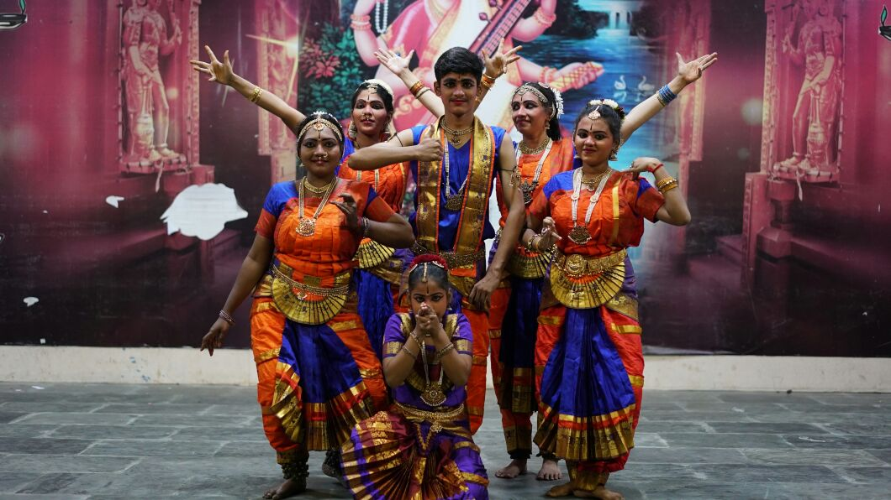
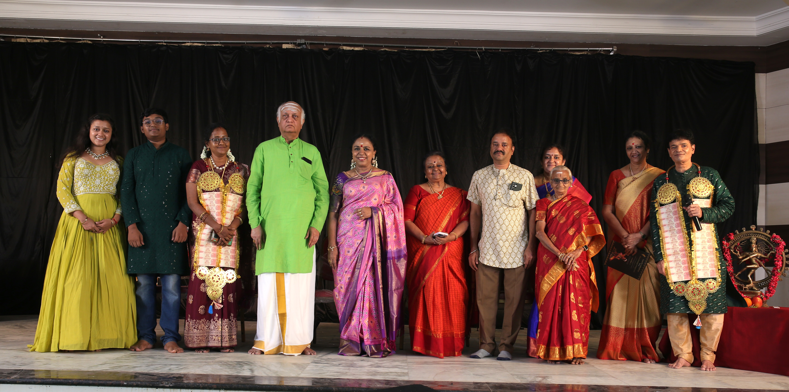
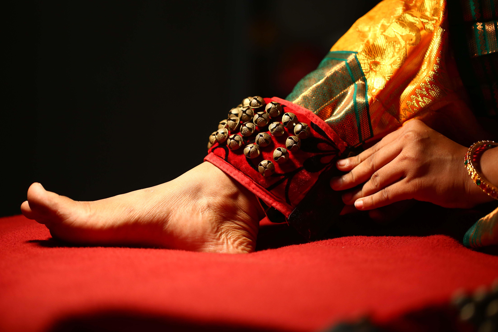

From Kalakshetra to Kumbakonam to the World
The Yatra
A small town. A family's faith. Posters on walls instead of posts on feeds. And a Guru who never stopped teaching.
1993
Graduates from Kalakshetra
Deepak Venkatesh completes his training at the legendary Kalakshetra, Chennai — one of India's most prestigious classical arts institutions — and returns to Kumbakonam with a Guru's heart and a student's humility.

1994
Teaching from Home · The Humble Beginning
Guru Deepak begins teaching classical dance from his own home and founded Nruthyalaya inspred from Dr.Padma Subrahmanyam's Nruthyodaya. His family stands beside him through every step. The town takes notice.

1999
First 8 Arangetrams of Nruthyalaya
By 1999, 8 students of Nruthyalaya had completed their Arangetrams. Trained from scratch in a house, they perform to a full audience. Then Guru Deepak leaves for Signapore.

2001
Singapore Fine Arts Academy
Guru Deepak joins the Singapore Fine Arts Academy for nearly two years — teaching Bharatanatyam on an international stage, performing with stalwarts, and returning home with a deeper, wider vision for what Nruthyalaya could become.

2002
Back to Kumbakonam · Natyanjali Introduced
Returning home, Guru Deepak resumes teaching with renewed purpose. He introduces the Natyanjali festival to Kumbakonam — bringing students to dance at the feet of Lord Nataraja in the great temple town.

2012
Vipanchee Nruthyalaya — The Building Opens
The defining chapter. Guru Deepak acquires land, and with the support of his family, his students, and the entire community of Kumbakonam — builds his own dance school from the ground up. No longer a house, but a home for the art. Late Dr. M. Balamuralikrishna and Late Dr. Saraswathi Sundaresan grace the inauguration. The town had always believed. This was their answer.

2015
Second Batch · 9 More Arangetrams
Another milestone — 9 more students complete their Arangetrams. Among them: Aishwarya, Ishwarya, Tharunika, Cliff, Abhinaya, Swathi and Harshini. Each one a testament to years of practice, dedication — and a Guru who believed in them.

2016
M.S. Subbulakshmi — Oru Sagaaptham
A grand choreographic tribute to Bharat Ratna Dr. M.S. Subbulakshmi — "Oru Sagaaptham" — a video visual dance & drama production by Guru Deepak Venkatesh and the Vipanchee family. Music, movement, and memory woven into reverence.

2019
Silver Jubilee — 25 Years of Deepak
A celebration organised not by the Guru, but by his students — the very first batch from the 1990s, who never forgot what he gave them. The pillars of Kumbakonam came together to honour one of their own. Twenty-five years of teaching, performing, and pouring life into an art form. The town that believed in him from the beginning, celebrated him the way only a hometown can.

2024
3 More Arangetrams
Three more students step onto the stage in their Arangetrams — carrying forward a tradition that began in a small house in Kumbakonam. The journey never ends; it simply passes to the next pair of feet.

2025
30 Years · Expanding to Chennai & Bengaluru
Three decades on — 300+ students, 20+ Arangetrams, 500+ temple performances, and now new centres in Chennai and Bengaluru. From a small town boy who started teaching in his living room, to a Guru whose students dance across the country. Kumbakonam made this possible.
